حوّل نماذجك الورقية (Excel و Word) إلى نماذج إلكترونية تمر على المعتمِدين بالترتيب، وتُتابَع لحظة بلحظة، ثم تُحفظ في أرشيف آمن.
الطلبات الورقية تضيع بين المكاتب، ولا يعرف مقدم الطلب أين وصل طلبه، ولا يوجد سجل يثبت من وافق ومتى، والبحث في الأرشيف الورقي يأخذ وقتاً. هذه المنصة تجعل كل طلب إلكترونياً من لحظة تقديمه حتى حفظه في الأرشيف.
كل ميزة أدناه موجودة وتعمل في النسخة التجريبية.
حقول نصية ورقمية وتواريخ وقوائم ومرفقات. يمنع النظام الإرسال حتى تُستكمل الحقول المطلوبة وتصح القيم (مثل: تاريخ النهاية بعد البداية).
لكل نموذج مسار معتمِدين بالترتيب (مدير القسم ← المالية ← المدير العام). كلٌّ يرى الطلب بعد اعتماد من قبله.
الرفض والإعادة يتطلبان ملاحظة. بعد التصحيح يعود الطلب إلى نفس المعتمِد الذي أعاده، لا إلى البداية.
المعتمِد يُشعَر فور وصول طلب إليه، ومقدم الطلب يُشعَر بكل قرار، ويرى مسار طلبه ومن عنده الآن.
الطلبات المنتهية في أرشيف بمدة حفظ محددة (3 سنوات افتراضياً)، مع بحث في كل البيانات وتصفية بالنموذج والحالة والتاريخ، وتصدير Excel.
الطلب المعتمد يُطبع أو يُحفظ PDF بأسماء المعتمِدين وأوقات اعتمادهم وسجله الكامل.
مدير النظام يضيف نموذجاً جديداً: حقوله وأنواعها وقيودها ومسار اعتماده ومدة حفظه - دون الرجوع للمبرمج.
كل مستخدم يرى ما يخصه: طلباته، أو الطلبات التي تمر عليه، أو الكل لمدير النظام.
كل دخول وتقديم واعتماد ورفض وتعديل نموذج مسجّل باسم المستخدم ووقته.
النسخة التجريبية تعمل في متصفحك، وما تضيفه يُحفظ عندك فقط، فجرّب بحرية.
ahmedمدير القسم: managerالمدير المالي: financeالمدير العام: gmمدير النظام: adminكلمة المرور لكل الحسابات: 1234، أو اضغط اسم الحساب في صفحة الدخول.
اضغط أي صورة لتكبيرها.
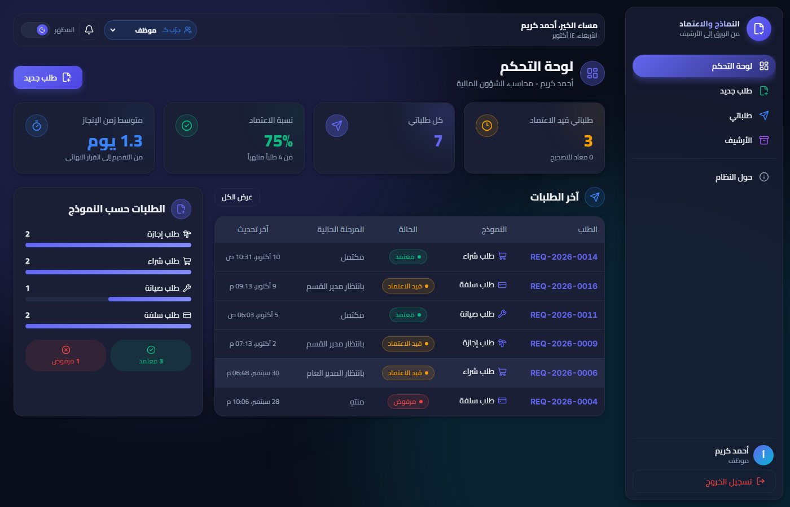
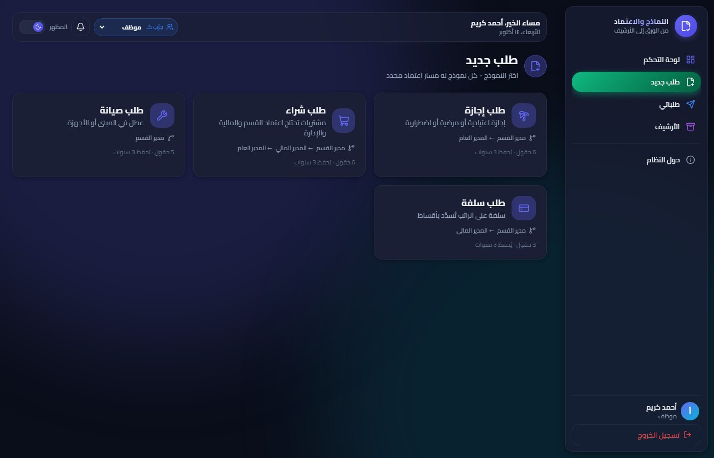
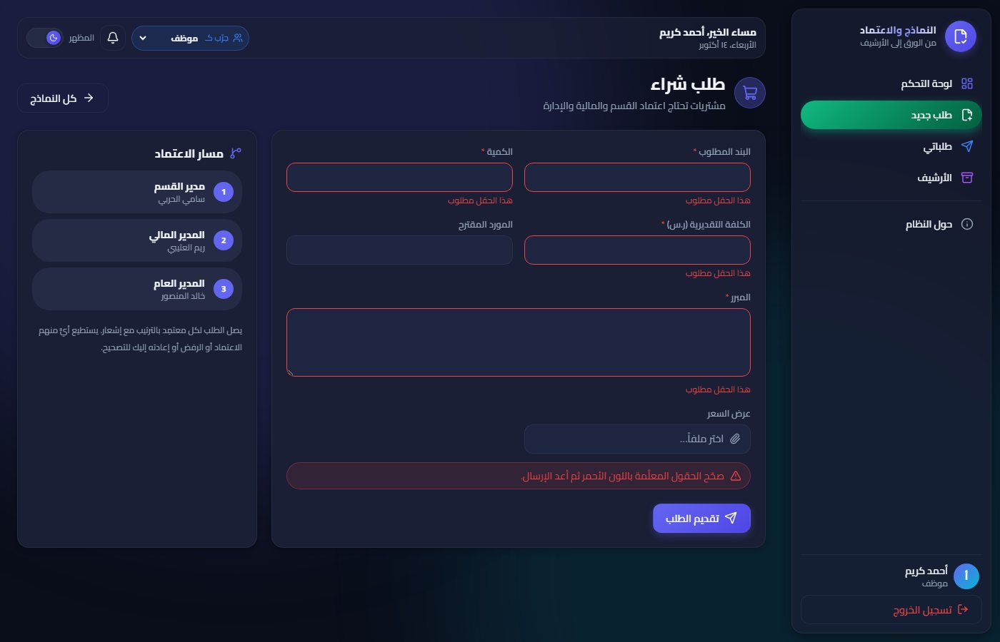
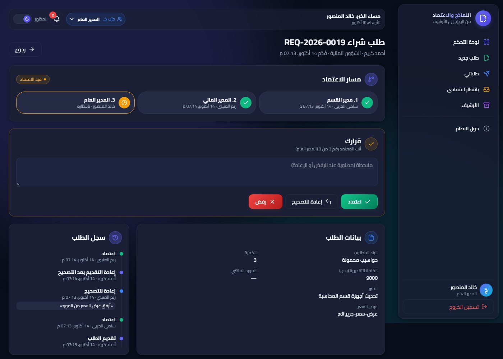
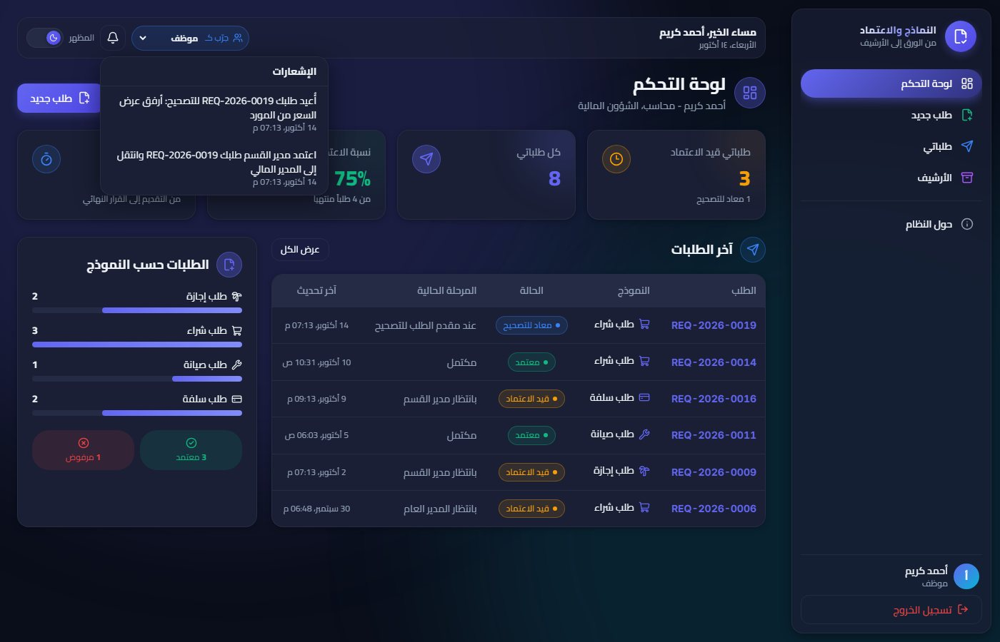
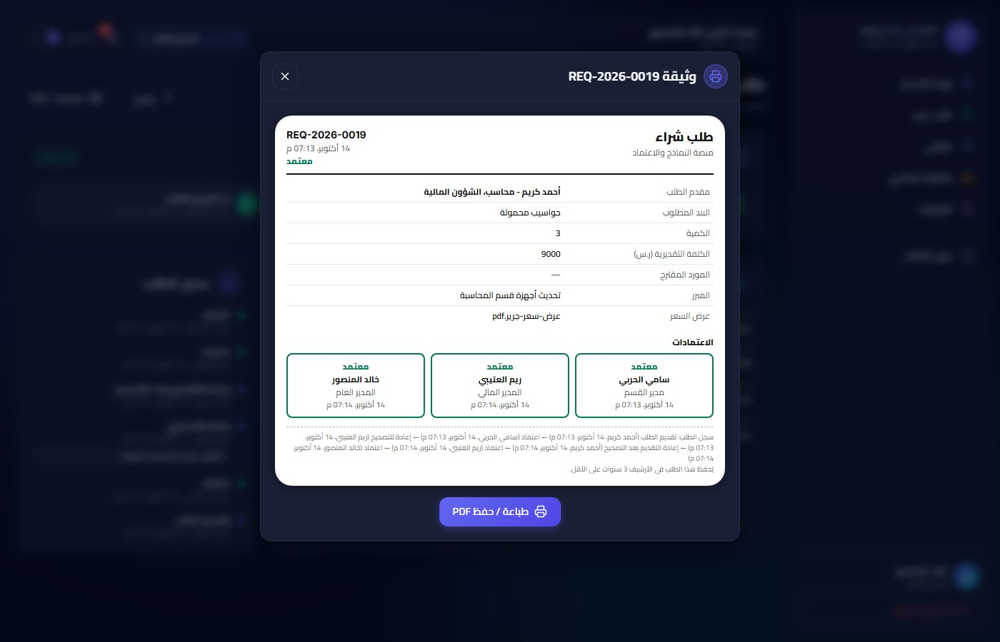
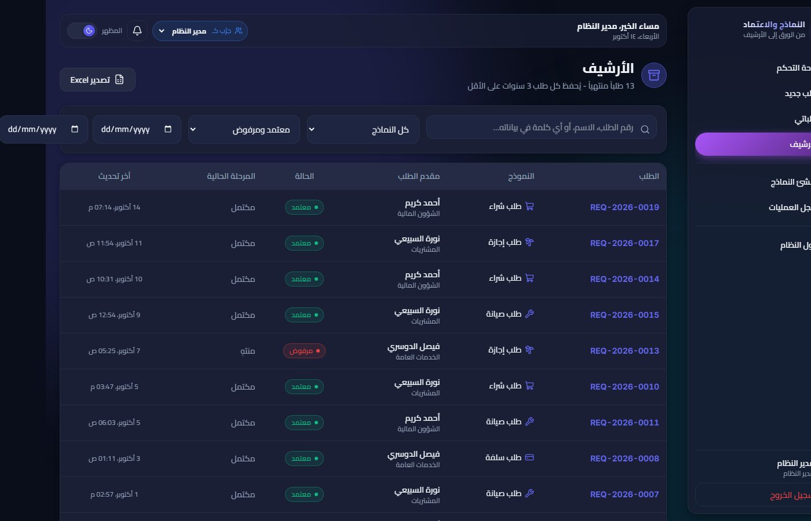
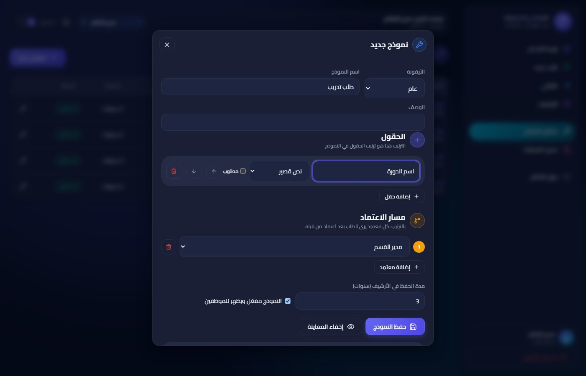
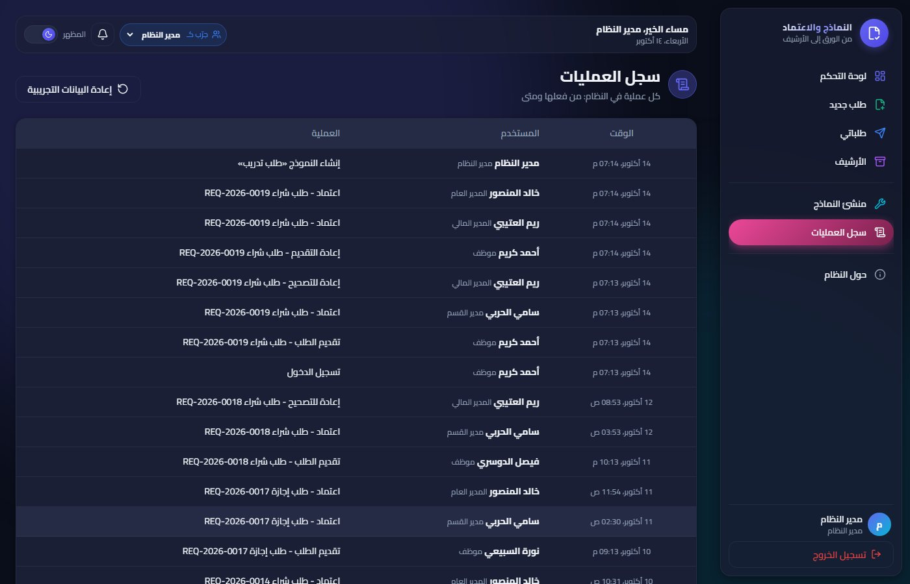
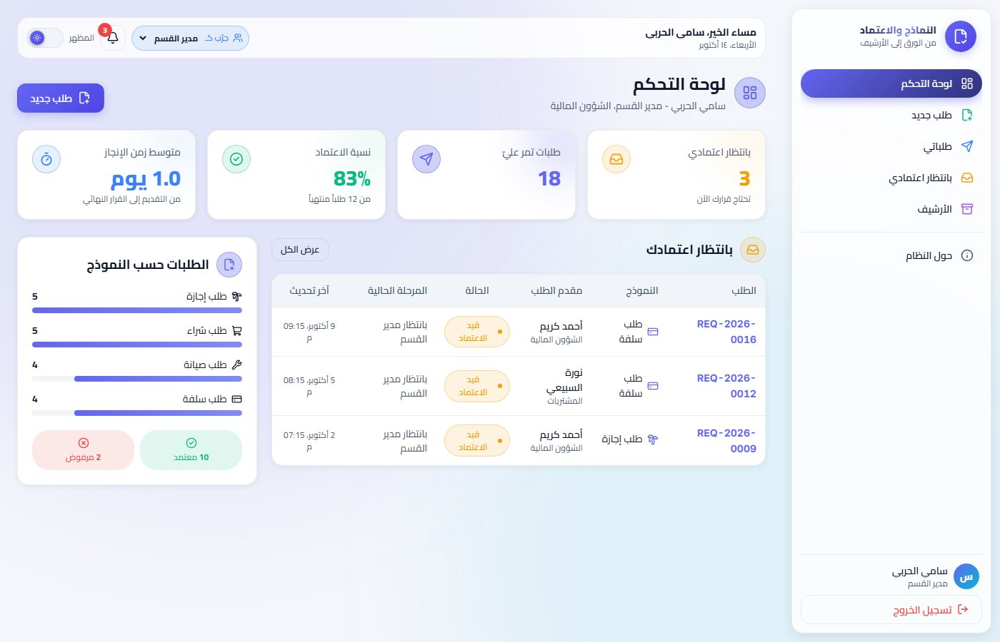
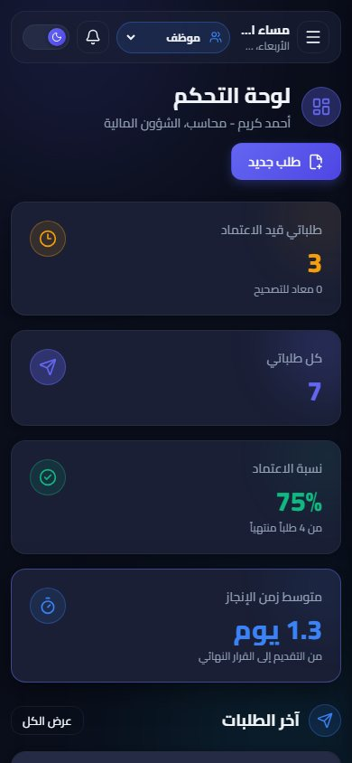
النسخة التجريبية تحفظ في متصفحك للتجربة فقط. النسخة التي تُسلَّم لك نظام كامل على خادم.
ASP.NET Core و SQL Server - البيانات مشتركة بين كل المستخدمين ومحفوظة على الخادم.
دخول بكلمات مرور مشفّرة وجلسات آمنة (JWT)، تشفير الاتصال (HTTPS)، وصلاحيات على مستوى الخادم.
رفع الملفات وحفظها على الخادم مع الطلب، وعرضها من داخل النظام.
إضافة للإشعارات داخل النظام، يمكن إرسال بريد للمعتمِد عند وصول طلب إليه.
نسخ احتياطي آلي لقاعدة البيانات والمرفقات، مع خطة استعادة.
تنصيب على خادمكم أو استضافة سحابية، ودليل استخدام، وشرح للمسؤول.
تسليم على مراحل، وتجربة نسخة عاملة مبكراً.